87. 通过库存实现生产平滑#
除了Anaconda中包含的库外，本讲座还使用以下库：
!pip install quantecon
87.1. 概述#
本讲座可以视为这个quantecon讲座中线性二次控制理论的一个应用。
它为一个企业制定了一个折现动态规划问题，该企业需要选择生产计划来平衡：
跨时期最小化生产成本
保持库存持有成本较低
遵循Holt、Modigliani、Muth和Simon [Holt et al., 1960]的经典著作传统，我们通过将企业问题构建为这个quantecon讲座中研究的线性二次折现动态规划问题来简化它。
由于生产成本随产量增加呈二次增长，如果持有库存的成本不是太高，企业会将库存作为缓冲，以便在时间上平滑生产。
但企业也希望从现有库存中进行销售，我们用二次方程来表示这种偏好，其中该二次方程是关于某时期的销售额与公司期初库存的差额的。
我们计算示例来说明公司如何在保持库存接近销售的同时实现最优生产平滑。
为介绍模型的组成部分，令：
\(S_t\) 为t时刻的销售额
\(Q_t\) 为t时刻的生产量
\(I_t\) 为t时刻期初的库存量
\(\beta \in (0,1)\) 为折现因子
\(c(Q_t) = c_1 Q_t + c_2 Q_t^2\)，为生产成本函数，其中\(c_1>0, c_2>0\)，为库存成本函数
\(d(I_t, S_t) = d_1 I_t + d_2 (S_t - I_t)^2\)，其中\(d_1>0, d_2 >0\)，为持有库存成本函数，包含两个组成部分：
持有库存的成本 \(d_1 I_t\)，以及
库存偏离销售的成本 \(d_2 (S_t - I_t)^2\)
\(p_t = a_0 - a_1 S_t + v_t\) 为公司产品的反需求函数，其中\(a_0>0, a_1 >0\)，且\(v_t\)为t时刻的需求冲击
\(\pi\_t = p_t S_t - c(Q_t) - d(I_t, S_t)\) 是企业在时间 \(t\) 的利润
\(\sum_{t=0}^\infty \beta^t \pi_t\) 是企业在时间 \(0\) 的利润现值
\(I_{t+1} = I_t + Q_t - S_t\) 是库存的变动规律
\(z_{t+1} = A_{22} z_t + C_2 \epsilon_{t+1}\) 是外生状态向量 \(z_t\) 的变动规律，其中 \(z_t\) 包含时间 \(t\) 时用于预测需求冲击 \(v_t\) 的有用信息
\(v_t = G z_t\) 将需求冲击与信息集 \(z_t\) 联系起来
常数 \(1\) 是 \(z_t\) 的第一个分量
为了将我们的问题映射到线性二次折现动态规划问题（也称为最优线性调节器），我们将时间 \(t\) 的状态向量定义为
并将控制向量定义为
状态向量 \(x_t\) 的变动规律显然是
或
(在这里，请原谅我们使用\(Q_t\)表示企业在t时刻的产量，而下面我们用\(Q\)表示在企业单期利润函数中出现的二次型\(u_t' Q u_t\)的矩阵)
我们可以将企业的利润表示为状态和控制的函数：
为了在LQ动态规划问题中构建矩阵\(R, Q, N\)，我们注意到企业在t时刻的利润函数可以表示为
其中 \(S_{c}=\left[1,0\right]\)。
符号说明： QuantEcon库中交叉乘积项的符号是 \(N\)。
企业的最优决策规则采用以下形式
在最优决策规则下，状态的演变为
企业选择 \(u_t\) 的决策规则以最大化
其中 \(x_0\) 给定。
这是一个随机贴现线性二次动态规划问题。
以下是用于计算最优决策规则并分析其结果的代码。
import matplotlib.pyplot as plt
import matplotlib as mpl
FONTPATH = "fonts/SourceHanSerifSC-SemiBold.otf"
mpl.font_manager.fontManager.addfont(FONTPATH)
plt.rcParams['font.family'] = ['Source Han Serif SC']
plt.rcParams["figure.figsize"] = (11, 5) #设置默认图像大小
import numpy as np
import quantecon as qe
class SmoothingExample:
"""
用于构建、求解和绘制库存和销售平滑问题结果的类。
"""
def __init__(self,
β=0.96, # 折现因子
c1=1, # 生产成本
c2=1,
d1=1, # 库存持有成本
d2=1,
a0=10, # 反需求函数
a1=1,
A22=[[1, 0], # z过程
[1, 0.9]],
C2=[[0], [1]],
G=[0, 1]):
self.β = β
self.c1, self.c2 = c1, c2
self.d1, self.d2 = d1, d2
self.a0, self.a1 = a0, a1
self.A22 = np.atleast_2d(A22)
self.C2 = np.atleast_2d(C2)
self.G = np.atleast_2d(G)
# 维度
k, j = self.C2.shape # 随机部分的维度
n = k + 1 # 状态数量
m = 2 # 控制变量数量
Sc = np.zeros(k)
Sc[0] = 1
# 构建转移法则矩阵
A = np.zeros((n, n))
A[0, 0] = 1
A[1:, 1:] = self.A22
B = np.zeros((n, m))
B[0, :] = 1, -1
C = np.zeros((n, j))
C[1:, :] = self.C2
self.A, self.B, self.C = A, B, C
# 构建单期收益函数矩阵
R = np.zeros((n, n))
R[0, 0] = d2
R[1:, 0] = d1 / 2 * Sc
R[0, 1:] = d1 / 2 * Sc
Q = np.zeros((m, m))
Q[0, 0] = c2
Q[1, 1] = a1 + d2
N = np.zeros((m, n))
N[1, 0] = - d2
N[0, 1:] = c1 / 2 * Sc
N[1, 1:] = - a0 / 2 * Sc - self.G / 2
self.R, self.Q, self.N = R, Q, N
# 构建LQ实例
self.LQ = qe.LQ(Q, R, A, B, C, N, beta=β)
self.LQ.stationary_values()
def simulate(self, x0, T=100):
c1, c2 = self.c1, self.c2
d1, d2 = self.d1, self.d2
a0, a1 = self.a0, self.a1
G = self.G
x_path, u_path, w_path = self.LQ.compute_sequence(x0, ts_length=T)
I_path = x_path[0, :-1]
z_path = x_path[1:, :-1]
𝜈_path = (G @ z_path)[0, :]
Q_path = u_path[0, :]
S_path = u_path[1, :]
revenue = (a0 - a1 * S_path + 𝜈_path) * S_path
cost_production = c1 * Q_path + c2 * Q_path ** 2
cost_inventories = d1 * I_path + d2 * (S_path - I_path) ** 2
Q_no_inventory = (a0 + 𝜈_path - c1) / (2 * (a1 + c2))
Q_hardwired = (a0 + 𝜈_path - c1) / (2 * (a1 + c2 + d2))
fig, ax = plt.subplots(2, 2, figsize=(15, 10))
ax[0, 0].plot(range(T), I_path, label="库存")
ax[0, 0].plot(range(T), S_path, label="销售")
ax[0, 0].plot(range(T), Q_path, label="生产")
ax[0, 0].legend(loc=1)
ax[0, 0].set_title("库存、销售和生产")
ax[0, 1].plot(range(T), (Q_path - S_path), color='b')
ax[0, 1].set_ylabel("库存变化", color='b')
span = max(abs(Q_path - S_path))
ax[0, 1].set_ylim(0-span*1.1, 0+span*1.1)
ax[0, 1].set_title("需求冲击和库存变化")
ax1_ = ax[0, 1].twinx()
ax1_.plot(range(T), 𝜈_path, color='r')
ax1_.set_ylabel("需求冲击", color='r')
span = max(abs(𝜈_path))
ax1_.set_ylim(0-span*1.1, 0+span*1.1)
ax1_.plot([0, T], [0, 0], '--', color='k')
ax[1, 0].plot(range(T), revenue, label="收入")
ax[1, 0].plot(range(T), cost_production, label="生产成本")
ax[1, 0].plot(range(T), cost_inventories, label="库存成本")
ax[1, 0].legend(loc=1)
ax[1, 0].set_title("利润分解")
ax[1, 1].plot(range(T), Q_path, label="生产")
ax[1, 1].plot(range(T), Q_hardwired, label='强制$I_t$为零时的生产')
ax[1, 1].plot(range(T), Q_no_inventory, label='库存无用时的生产')
ax[1, 1].legend(loc=1)
ax[1, 1].set_title('三种生产概念')
plt.show()
请注意上述代码将参数设置为以下默认值
贴现因子 \(\beta=0.96\),
反需求函数: \(a0=10, a1=1\)
生产成本 \(c1=1, c2=1\)
库存持有成本 \(d1=1, d2=1\)
在下面的例子中，我们将改变部分或全部这些参数值。
87.2. 示例1#
在这个例子中，需求冲击遵循AR(1)过程：
这意味着
我们设置 \(\alpha=1\) 和 \(\rho=0.9\)，这是它们的默认值。
我们将计算并显示结果，然后在相关图表下方进行讨论。
ex1 = SmoothingExample()
x0 = [0, 1, 0]
ex1.simulate(x0)
findfont: Failed to find font weight normal, now using 600.
findfont: Failed to find font weight normal, now using 600.
findfont: Failed to find font weight normal, now using 600.
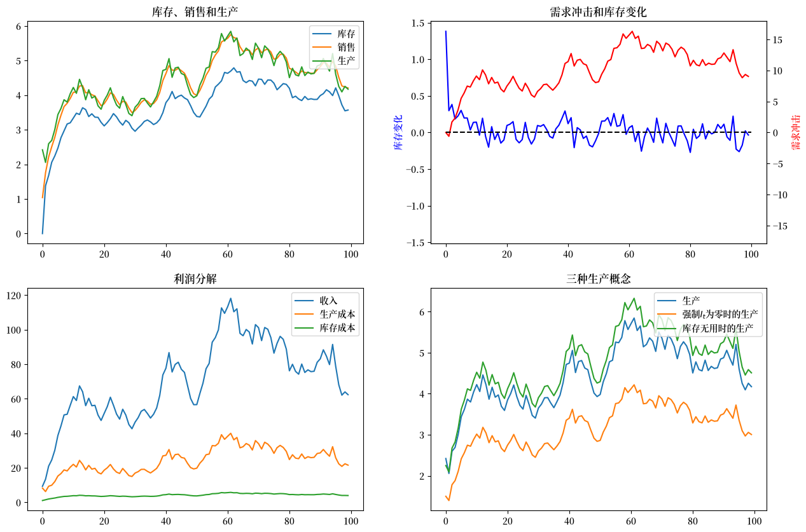
上述图表展示了最优生产计划的各种特征。
从零库存开始，企业建立库存并利用它们来平滑面对需求冲击时的高成本生产。
最优决策显然会对需求冲击做出反应。
库存总是小于销售量，因此部分销售来自当期生产，这是持有库存成本\(d_1 I_t\)导致的结果。
右下方的面板显示了最优生产与两种替代生产概念之间的差异 - 这两种概念源于改变企业的成本结构，即其技术。
这两个概念对应于以下两种不同的经过改变的企业问题：
一种不需要库存的情况
一种需要库存但我们强制企业始终保持\(I_t=0\)的情况
我们使用这两种替代生产概念来阐明基准模型。
87.3. 库存无用处的情况#
让我们首先来看不需要库存的情况。
在这个问题中，企业制定一个产出计划，使以下期望值最大化
事实证明，这个问题中\(Q_t\)的最优计划也能解决一系列静态问题 \(\max_{Q_t}\{p_t Q_t - c(Q_t)\}\)。
当不需要或不使用库存时，销售总是等于生产。
这简化了问题，无库存生产的最优化就是使以下期望值最大化
最优决策规则是
87.4. 库存有用但被强制设为永远为零#
接下来，我们来看另一个不同的问题，在这个问题中库存是有用的 - 意味着销售不等于库存会产生\(d_2 (I_t - S_t)^2\)的成本 - 但我们任意地强加给企业这个不持有库存的代价高昂的限制。
在这里，企业的最大化问题是
受限于对所有t都有\(I_{t}=0\)的限制， 以及\(I_{t+1}=I_{t}+Q_{t}-S_{t}\)。
\(I_t = 0\)的限制意味着\(Q_{t}=S_{t}\)， 且最大化问题简化为
这里的最优生产计划是
我们引入这个\(I_t\) 硬性设定为零的规范， 目的是通过与其他两个版本问题的结果比较， 来阐明库存所发挥的作用。
右下方面板显示了我们感兴趣的原始问题的生产路径（蓝线），以及存货无用模型的最优生产路径（绿色路径），还有存货虽然有用但被强制设为零、且公司需要为销售量\(S_t\)不等于零而支付成本\(d(0, Q_t)\)的模型的生产路径（橙色线）。
注意，当存货无用时，公司通常会选择生产更多。在这种情况下，不需要从存货中销售，也不会因销售量偏离存货量而产生成本。
但是”通常”并不意味着”总是”。
因此，如果仔细观察，我们会发现在较小的\(t\)值时，右下方面板中绿色的”存货无用时的生产”线位于原始模型的最优生产线之下。
在原始模型中早期的高最优生产量出现是因为公司希望快速积累存货，以便在后期使用大量存货。
但是绿线与蓝线在早期的比较关系取决于需求冲击的演变，正如我们将在下面分析的确定性季节性需求冲击示例中所看到的。
在该示例中，由于下一次正向需求冲击在较远的未来，原始企业会选择缓慢积累库存。
为了更容易看清绿色-蓝色模型的生产对比，让我们将图表限制在前10个周期：
ex1.simulate(x0, T=10)
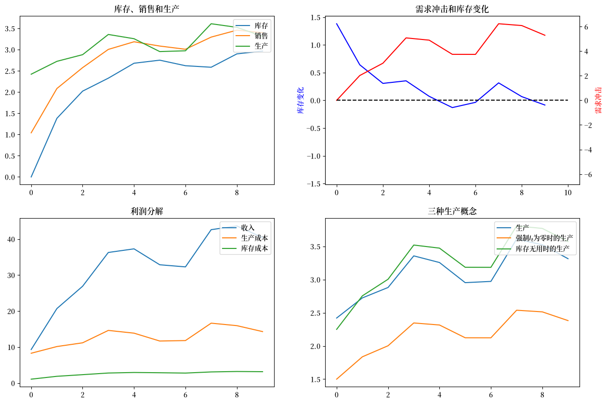
87.5. 示例2#
接下来，我们关闭需求中的随机性，假设需求冲击\(\nu_t\)遵循一个确定性路径：
同样，我们将计算并在一些图表中展示结果
ex2 = SmoothingExample(C2=[[0], [0]])
x0 = [0, 1, 0]
ex2.simulate(x0)
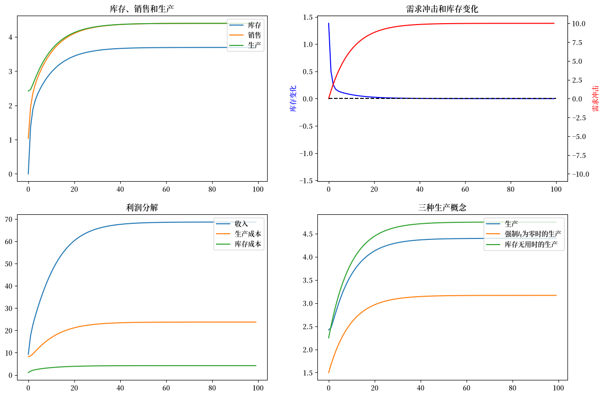
87.6. 示例 3#
现在我们将随机性重新引入需求冲击过程中，并且假设持有库存的成本为零。
具体来说，我们将研究一种情况，其中 \(d_1=0\) 但 \(d_2>0\)。
现在，将销售量大致设置为等于库存量，并利用库存来很好地平滑生产变得最优，如下图所示：
ex3 = SmoothingExample(d1=0)
x0 = [0, 1, 0]
ex3.simulate(x0)
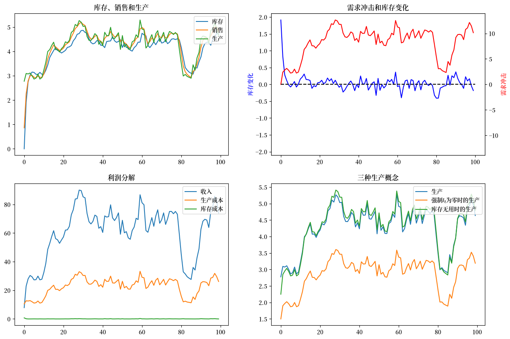
87.7. 示例 4#
为了突出与线性控制理论中某些技术问题相关的最优策略特征，我们现在暂时假设持有库存是无成本的。
当我们通过设置\(d_1=0\)和\(d_2=0\)完全取消持有库存的成本时，会发生一些荒谬的情况（因为贝尔曼方程具有机会主义性质且非常智能）。
（从技术角度来说，我们设置的参数最终违反了确保最优控制状态稳定性所需的条件。）
公司发现最优的选择是设置\(Q_t \equiv Q^* = \frac{-c_1}{2c_2}\)，这个产出水平使生产成本为零（当\(c_1 >0\)时，就像我们的默认设置一样，那么将产量设为负值是最优的，不管这意味着什么！）。
回顾库存的运动规律
因此，当\(d_1=d_2= 0\)时，公司发现在所有时期\(t\)将\(Q_t = \frac{-c_1}{2c_2}\)设为最优，那么
在我们默认参数下，对于几乎所有保持需求为正的\(S_t\)值都成立。
动态规划指示企业将生产成本设为零，并通过永远减少库存来运行庞氏骗局。
（我们可以将此理解为企业以某种方式做空或借入库存）
以下图表证实了库存无限下降
ex4 = SmoothingExample(d1=0, d2=0)
x0 = [0, 1, 0]
ex4.simulate(x0)
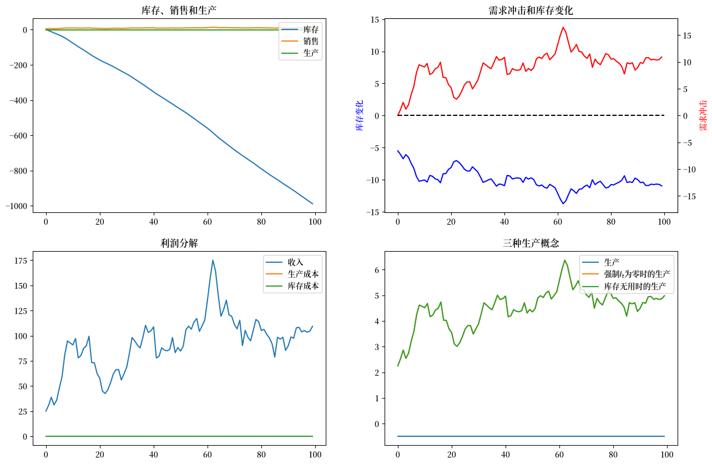
让我们缩短显示的时间跨度以突出显示正在发生的情况。
我们将用以下代码设置时间范围 \(T =30\)
# shorter period
ex4.simulate(x0, T=30)
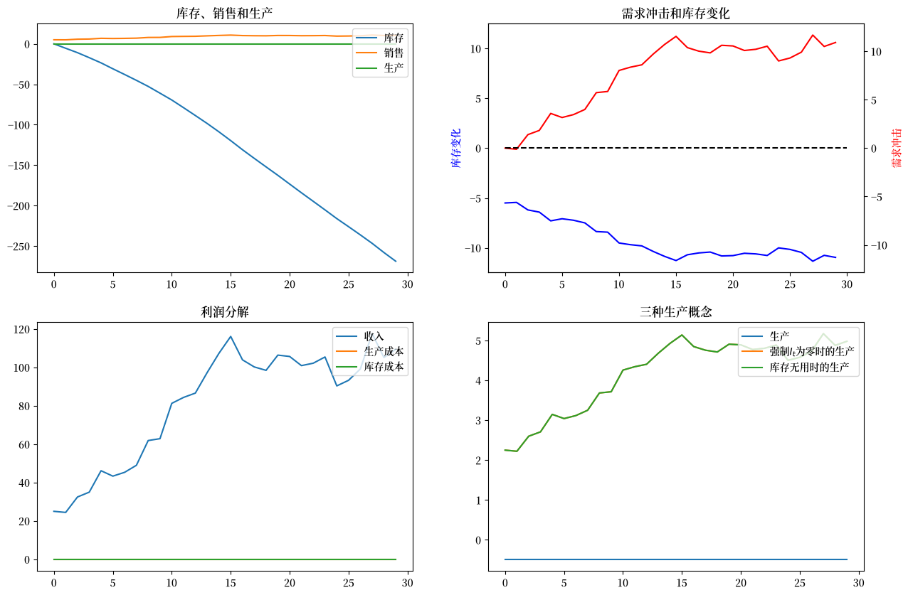
87.8. 示例 5#
现在我们假设需求冲击遵循线性时间趋势
为了表示这一点，我们设定 \(C_2 = \begin{bmatrix} 0 \cr 0 \end{bmatrix}\) 和
# 设置参数
a = 0.5
b = 3.
ex5 = SmoothingExample(A22=[[1, 0], [1, 1]], C2=[[0], [0]], G=[b, a])
x0 = [0, 1, 0] # 将初始库存设为0
ex5.simulate(x0, T=10)
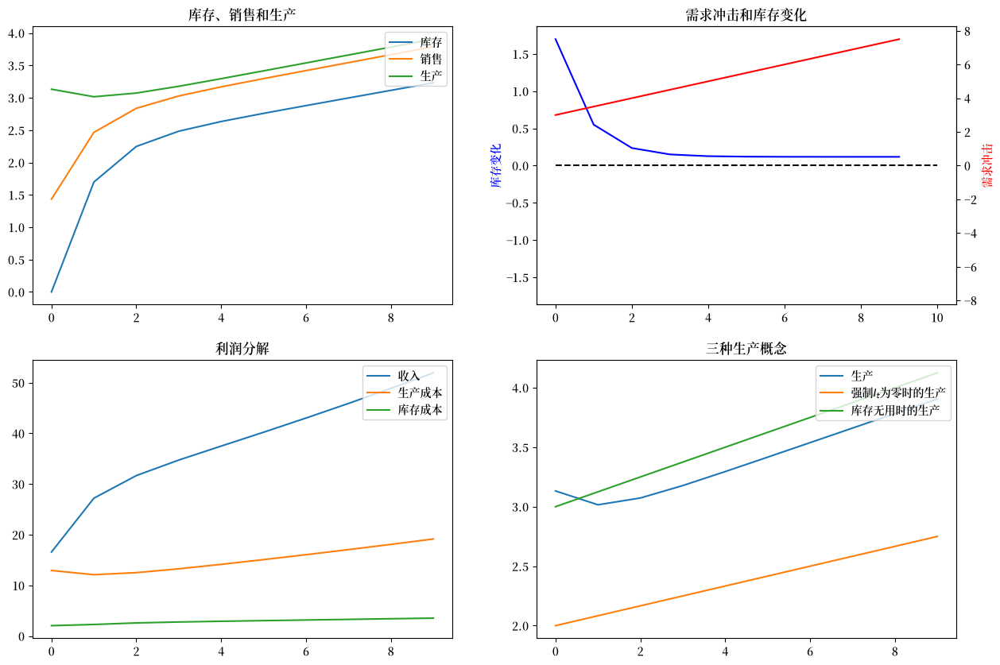
87.9. 示例6#
现在我们假设一个确定性的季节性需求冲击。
为了表示这一点，我们设定
其中 \(a > 0, b>0\) 且
ex6 = SmoothingExample(A22=[[1, 0, 0, 0, 0],
[0, 0, 0, 0, 1],
[0, 1, 0, 0, 0],
[0, 0, 1, 0, 0],
[0, 0, 0, 1, 0]],
C2=[[0], [0], [0], [0], [0]],
G=[b, a, 0, 0, 0])
x00 = [0, 1, 0, 1, 0, 0] # 设置初始库存为0
ex6.simulate(x00, T=20)
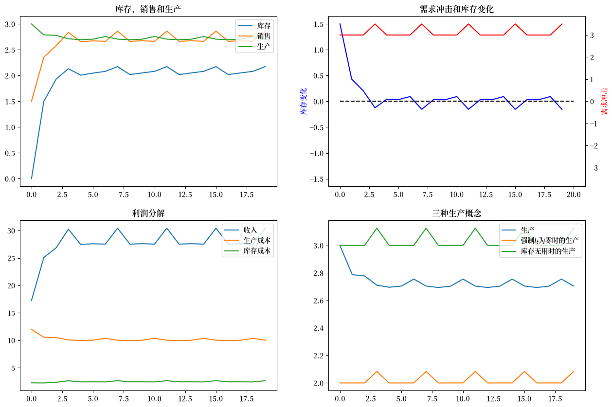
现在我们将生成一些更多的例子，这些例子仅仅在开始需求冲击的季节上有所不同
x01 = [0, 1, 1, 0, 0, 0]
ex6.simulate(x01, T=20)
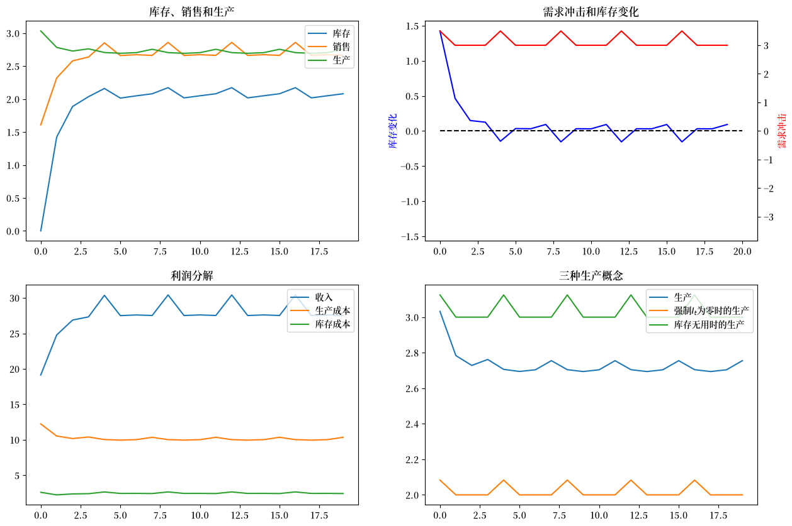
x02 = [0, 1, 0, 0, 1, 0]
ex6.simulate(x02, T=20)
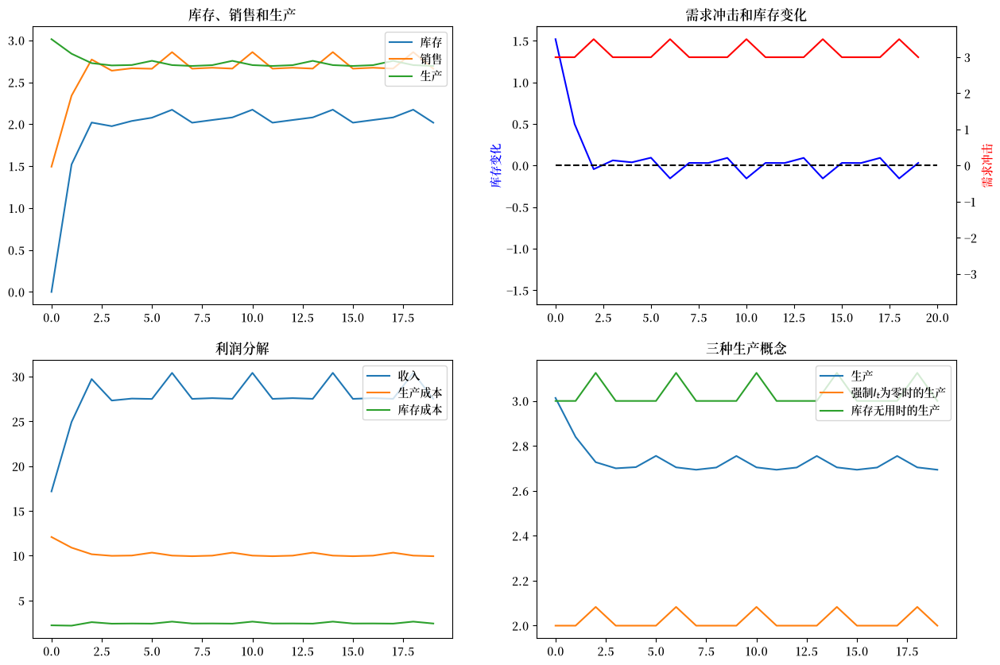
x03 = [0, 1, 0, 0, 0, 1]
ex6.simulate(x03, T=20)
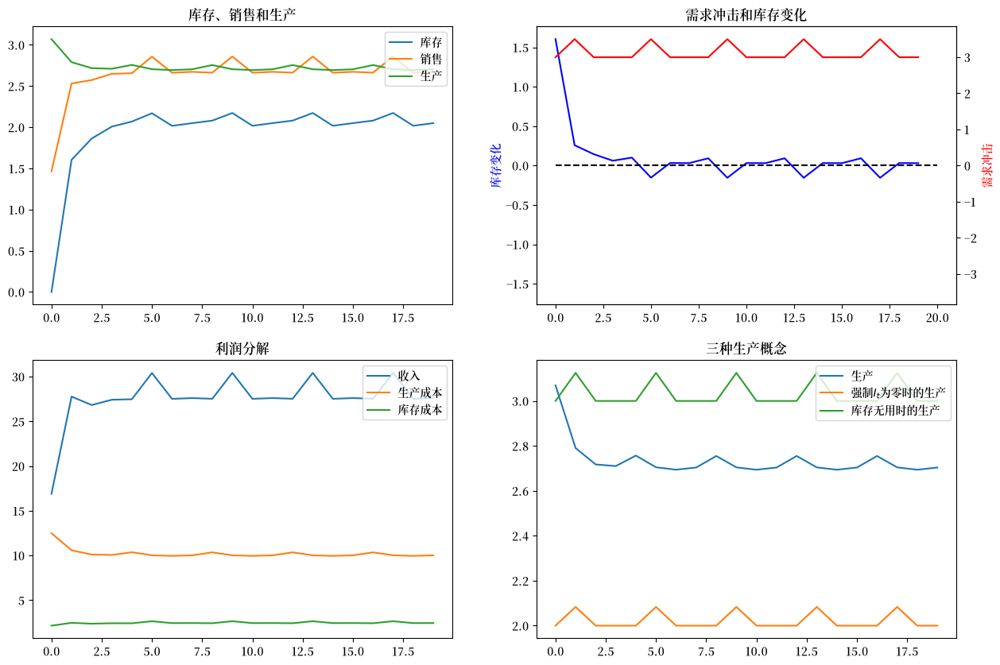
87.10. 练习#
请尝试使用SmoothingExample类分析一些库存销售平滑问题。
练习 87.1
假设需求冲击遵循以下AR(2)过程：
其中\(\alpha=1\)，\(\rho_{1}=1.2\)，且\(\rho_{2}=-0.3\)。
你需要正确构建\(A22\)、\(C\)和\(G\)矩阵，
然后将它们作为关键字参数输入到SmoothingExample类中。从初始
条件\(x_0 = \left[0, 1, 0, 0\right]^\prime\)开始模拟路径。
之后，尝试构建一个非常相似的SmoothingExample，
使用相同的需求冲击过程但排除随机性
\(\epsilon_t\)。通过长期模拟计算稳态\(\bar{x}\)。
然后尝试对\(\bar{\nu}_t\)添加不同幅度的冲击并模拟路径。
通过观察生产计划，你应该能看到企业如何做出不同的响应。
解答 练习 87.1
# 设置参数
α = 1
ρ1 = 1.2
ρ2 = -.3
# 构建矩阵
A22 =[[1, 0, 0],
[1, ρ1, ρ2],
[0, 1, 0]]
C2 = [[0], [1], [0]]
G = [0, 1, 0]
ex1 = SmoothingExample(A22=A22, C2=C2, G=G)
x0 = [0, 1, 0, 0] # 初始条件
ex1.simulate(x0)
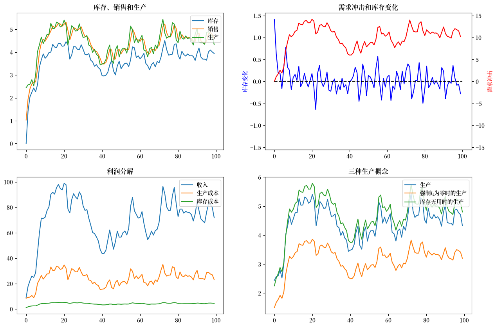
# 现在消除噪音
ex1_no_noise = SmoothingExample(A22=A22, C2=[[0], [0], [0]], G=G)
# 初始条件
x0 = [0, 1, 0, 0]
# 计算稳态
x_bar = ex1_no_noise.LQ.compute_sequence(x0, ts_length=250)[0][:, -1]
x_bar
array([ 3.69387755, 1. , 10. , 10. ])
在下面的内容中，我们对\(\bar{\nu}_t\)添加小幅和大幅冲击，并比较企业在产量方面的不同反应。由于在我们使用的参数化条件下冲击的持续性不是很强，我们主要关注短期反应。
T = 40
# 小幅冲击
x_bar1 = x_bar.copy()
x_bar1[2] += 2
ex1_no_noise.simulate(x_bar1, T=T)
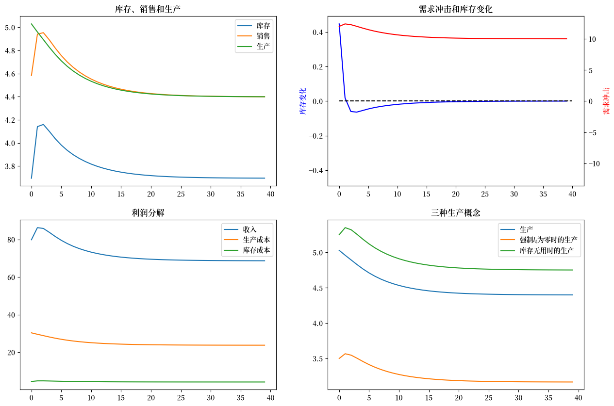
# 大幅冲击
x_bar1 = x_bar.copy()
x_bar1[2] += 10
ex1_no_noise.simulate(x_bar1, T=T)
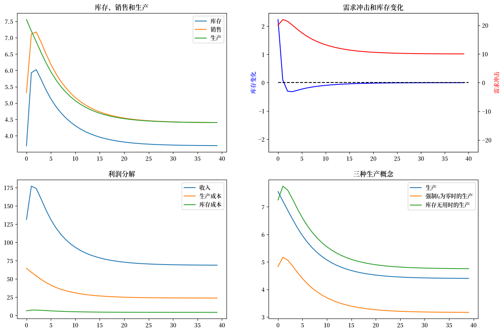
练习 87.2
改变\(C(Q_t)\)和\(d(I_t, S_t)\)的参数。
通过设置\(c_2=5\)来提高生产成本。
通过设置\(d_2=5\)来增加库存偏离销售的成本。
解答 练习 87.2
x0 = [0, 1, 0]
SmoothingExample(c2=5).simulate(x0)
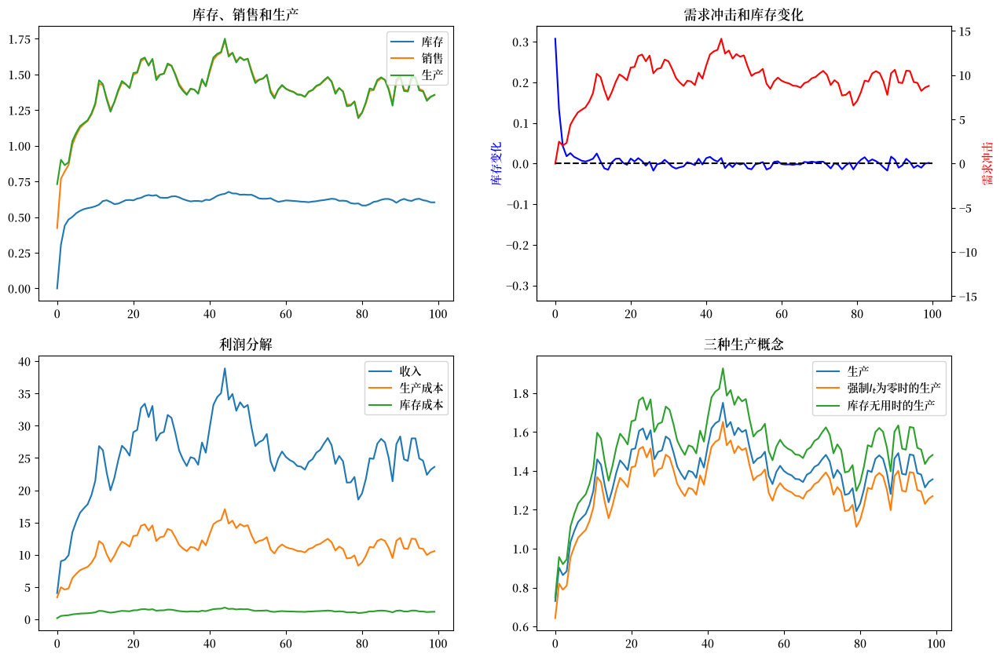
SmoothingExample(d2=5).simulate(x0)
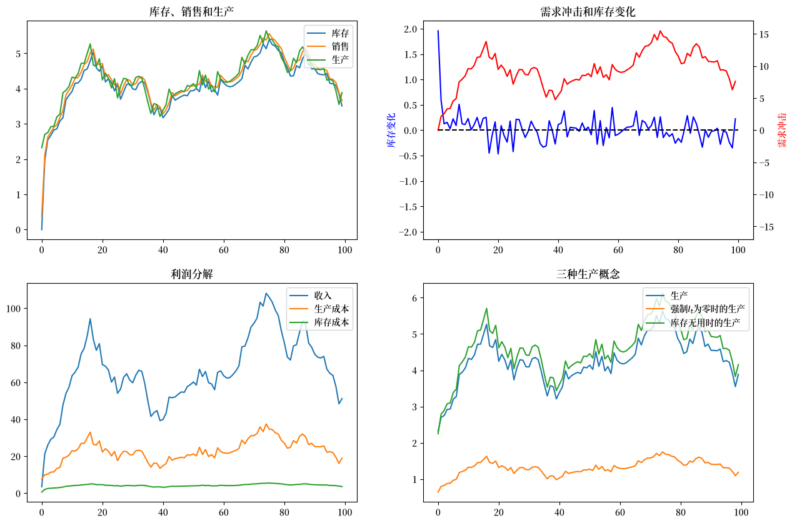